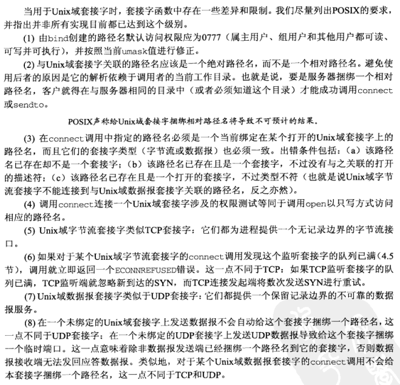

[UNP]:Unix域套接字
Unix Domain协议是一个在单主机上执行进程间通信的IPC方法， 使用Unix Domain套接字有以下几个理由:
UNIX域套接字域TCP套接字相比，在同一台主机的传输速度前者是后者的两倍
UNIX域套接字仅仅复制数据，并不执行协议处理，不需要添加或删除网络报头，无需计算校验和，不产生顺序号，也不需要发送确认报文
UNIX域套接字可以在同一台主机上各进程之间传递文件描述符
UNIX域套接字使用路径名来表示协议地址
1. Unix Domain套接字地址结构
sockaddr_un
1
2
3
4
5#define UNIX_PATH_MAX 108
struct sockaddr_un{
sa_family_t sun_family; // AF_LOCAL
char sun_path[UNIX_PATH_MAX]; // 路径名，必须以空字符结尾
}sun_family
协议族，Unix Domain套接字即是AF_LOCAL
sun_path
路径名，用于标识协议地址
2. socketpair()
该函数用于创建两个套接字，调用完成后，这两个套接字就会自行connect(), 有点类似于管道, 该函数只适用于Unix Domain套接字
socketpair
1
2
3#include <sys/socket.h>
int socketpair(int family, int type, int protocol, int sockfd[2]);
// return : 成功返回0， 失败返回-1family + protocol
对于Unix Domain套接字来说，family必须置为AF_LOCOL, protocol必须置为0
type
套接字的类型，可以是SOCK_STREAM或SOCK_DGRAM, 通常是SOCK_STREAM
sockfd[2]
类似于管道的返回方式，sockfd[0], sockfd[1]是两个套接字，两个管道之间是全双工的连接
3. Unix Domain套接字限制

4. 客户/服务器程序
在客户/服务器程序中，使用Unix Domain套接字与使用普通的套接字j基本上没什么区别，最大的区别就是多了上面所说的那些限制
注: 当使用Unix Domain 数据报套接字协议时，必须显式绑定bind一个路径名到套接字
5. 描述符传递
使用Unix Domain套接字进行文件描述符传递的流程如下
两个进程分别创建Unix Domain套接字(通常是SOCK_STREM类型)
服务器端依旧是进行常规的套接字操作流程:
- bind()路径名到指定套接字
客户端打开一个文件描述符，创建
msghdr结构，在其中的辅助数据msg_control字段包含给定的文件描述符调用
sendmsg()发送给服务器进程，此时该文件描述符处于in flight注： 一旦子进程发送了这个打开的文件描述符，它就可以exit()了，即使这样做会关闭其所有的打开着的文件描述符
对于接受进程来说，该描述符依旧处于打开状态
发送一个文件描述符会使文件描述符的引用计数 + 1
接受进程调用
recvmsg()接受该描述符
本博客所有文章除特别声明外，均采用 CC BY-SA 4.0 协议 ，转载请注明出处！